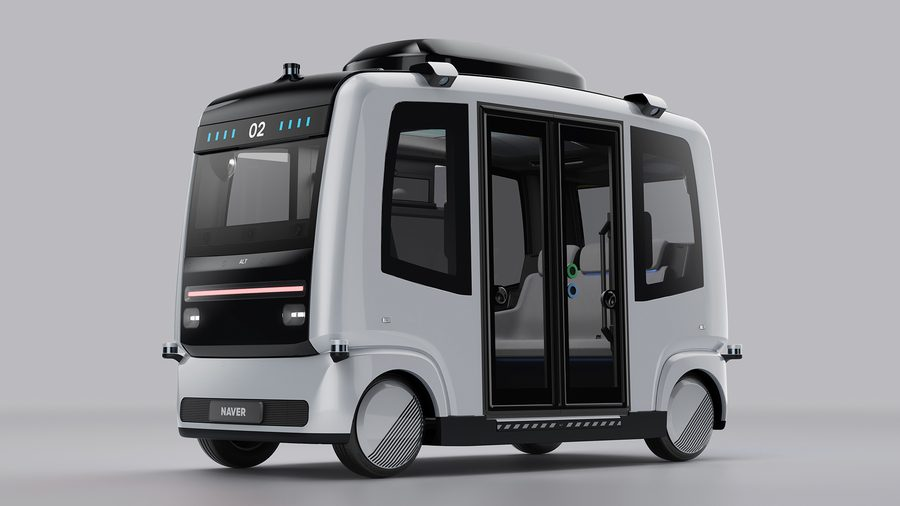
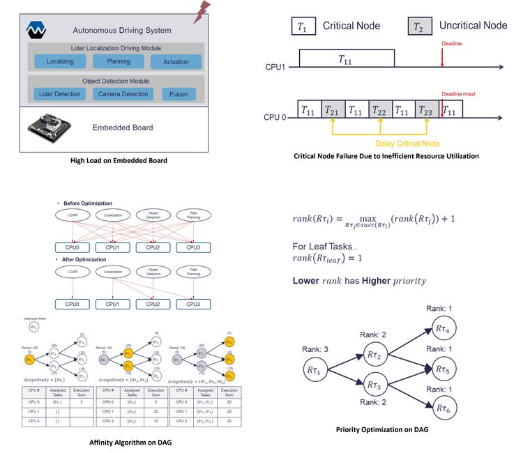
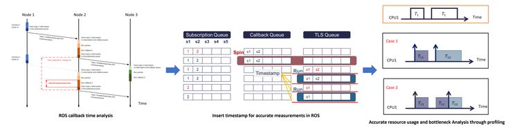
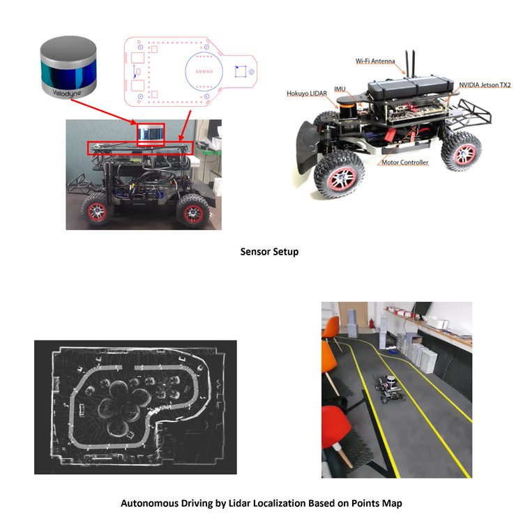
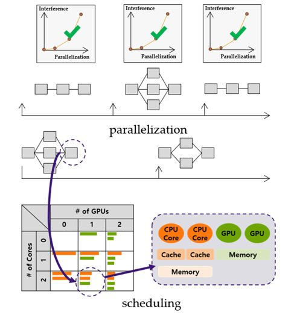

사진 Photo © NAVER LABS
Naver Labs · 2024 –
P1 거리뷰 매핑 차량 플랫폼P1 Street View Mapping Vehicle Platform
표준 Ubuntu로 돌던 차량을 커스텀 Yocto OS(read-only rootfs, A/B 이중화)로 전환. 약 2년 된 차량 제어 코드를 2명이 AI 코딩 에이전트와 함께 상태기계로 재설계해 회귀 없이 전환하고 초기화 시간 약 44% 단축. 촬영 장비 제어 소프트웨어의 예외처리를 체계화하고 형식·주기가 다른 이종 센서(카메라·LiDAR·GPS) 간 시간 동기화 안정성을 확보해 데이터 수집 신뢰성을 높였고, 실차 검증으로 서비스 수준 완성.
Moved the vehicle from stock Ubuntu to a custom Yocto OS (read-only rootfs, A/B redundancy). A two-person team with AI coding agents redesigned the two-year-old vehicle-control code as a state machine, passing all regression tests and cutting startup ~44%. Hardened capture-device control with systematic exception handling and stabilized time synchronization across heterogeneous sensors (camera, LiDAR, GPS), making data collection dependable; brought to service level through on-vehicle validation.
공식 소개Official page
네이버 지도에서 실제 서비스 현황 보기See the live service
YoctoA/B OTAState MachineSensor SyncEmbedded Linux

이미지 Image © NAVER LABS
Naver Labs · 2022 – 2025
ALT-B 자율주행 셔틀ALT-B Autonomous Shuttle
실서비스 중인 자율주행 셔틀의 차량 제어·센서·UI 디바이스 드라이버 개발, 차량 내 네트워크 설계, 월 단위 정기 릴리스 운영. 현장 장애는 스토리지·네트워크·애플리케이션 계층까지 파고들어 근본원인 분석.
Vehicle control, sensor, and UI device drivers for a shuttle in daily service — plus in-vehicle network design and a monthly release train. Traced field failures to root cause across storage, network, and application layers.
공식 소개Official page
Device DriversCANNetworkingRelease Eng.

SNU · 2019 – 2021
자율주행 워크로드 실시간 최적화 (석사논문)Real-Time Optimization of Autonomous-Driving Workloads (M.S. Thesis)
Jetson TX2 위 Autoware를 perf/kernelshark로 프로파일링해 DAG로 모델링, 리눅스 기본 도구(정책·친화도·우선순위)만 쓰는 3단계 휴리스틱 제안. 기본 CFS는 주행 실패, 제안 기법은 전 데드라인 만족.
Profiled Autoware on a Jetson TX2 (perf/kernelshark), modeled it as a DAG, and proposed a 3-step heuristic using only stock Linux knobs. Default CFS failed the drive; the method met every deadline.
SchedulingperfROS/AutowareJetson TX2

SNU · 2020
ROS 실행시간 프로파일링 도구ROS Execution-Time Profiling Tool
기존 도구로는 ROS 노드 주기의 시작·끝을 알 수 없던 문제를, 모든 노드가 공통 호출하는 ROS 함수 한 곳만 수정해 해결 — 전체 노드의 타임스탬프를 확보하는 프로파일링 도구 개발.
Existing tools couldn't see ROS node cycle boundaries; a single modification to a commonly-called ROS function yielded timestamps for every node.
ROSProfilingkernelshark

SNU · 2019 – 2020
자율주행 실험 플랫폼 구축Autonomous-Driving Experiment Platforms
스케줄링·최적화 연구를 위해 1/10 스케일 RC카와 실차, 두 곳에 라이다·카메라를 장착한 자율주행 실험 플랫폼을 직접 구축.
Built two experiment platforms for scheduling research — a 1/10-scale RC car and a real car, each with LiDAR and cameras.
RC CarLiDARSystem Integration

SNU · 2019 – 2021
실시간 태스크 최적 병렬화 연구Optimal Task Parallelization for Global EDF
병렬화 자유도를 가진 실시간 태스크의 조건부 최적 병렬화 연구에 참여 — 스케줄 가능성 최대 60% 개선. IEEE RTSS 2019 · IEEE TC 2022 게재.
Contributed to conditionally optimal parallelization of real-time tasks — up to 60% schedulability gains. Published at IEEE RTSS 2019 and in IEEE TC 2022.
Real-TimeG-EDFMulticoreSimulation